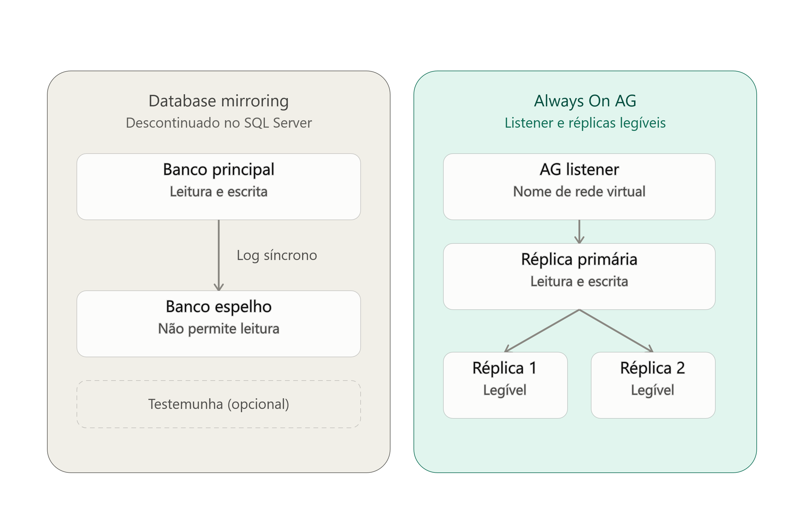
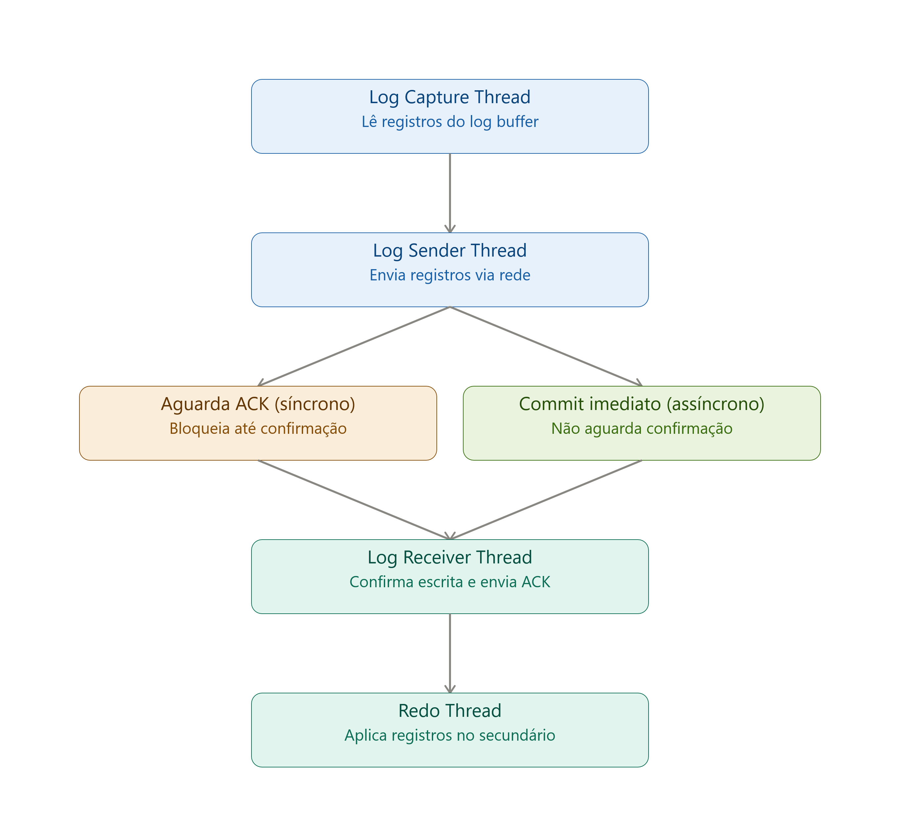

Always On Availability Groups
Olá, pessoal! Se você trabalha com sustentação, arquitetura ou engenharia de dados em ambientes críticos, sabe que garantir que o banco de dados permaneça no ar mesmo diante de falhas de hardware, rede ou desastres locais é um dos pilares mais importantes da profissão. No universo do Microsoft SQL Server, a solução definitiva para esse desafio atende pelo nome de Always On Availability Groups (AG).
Neste artigo, vamos fazer um mergulho profundo no tema: passaremos do conceito de HADR até a anatomia interna das threads do mecanismo, compararemos a arquitetura com o PostgreSQL e encerraremos com scripts T-SQL prontos para o seu monitoramento no dia a dia.
1. O Conceito de HADR e a Evolução: Por que o Always On substituiu o Database Mirroring?
Para entender o Always On AG, primeiro precisamos revisar duas siglas essenciais do mundo corporativo:
- HA (High Availability / Alta Disponibilidade): Foco em minimizar o tempo de inatividade não planejado (RTO - Recovery Time Objective próximo de zero).
- DR (Disaster Recovery / Recuperação de Desastres): Foco em garantir que os dados não sejam perdidos em caso de falhas (RPO - Recovery Point Objective próximo de zero).
Antes do SQL Server 2012, a principal tecnologia baseada em logs de transação para HADR era o Database Mirroring. Apesar de eficiente para a época, ele possuía limitações severas:
- Funcionava estritamente a nível de um único banco de dados por sessão. Se a sua aplicação dependesse de três bancos relacionais, o failover de um não garantia o failover dos outros.
- A réplica secundária ficava inacessível para leitura (a menos que você criasse um Database Snapshot manual).
- Recurso descontinuado (deprecated) pela Microsoft em versões mais recentes.
O Always On Availability Groups resolveu essas dores permitindo agrupar múltiplos bancos de dados (Availability Databases) que fazem failover em conjunto, além de suportar até 8 réplicas secundárias, suporte a leituras offloaded (réplicas de leitura), backups no secundário e o conceito do Listener — um Ponto de Conexão VIRTUAL (VNN + IP) que redireciona o tráfego da aplicação de forma transparente para o nó primário corrente.

2. Arquitetura explicada:
Uma dúvida clássica é: O que acontece com o dado físico no nó primário após o envio do log? Ele aguarda a confirmação do secundário para gravar no arquivo MDF? A resposta está na separação estrita entre a movimentação dos blocos do Transaction Log (LDF) e a gravação de páginas de dados (MDF) através do conceito de Write-Ahead Logging (WAL).
A Jornada da Transação e o MDF Primário
- Alteração em Memória e Log Flush (Primário): Quando uma aplicação envia um
INSERT/UPDATE/DELETE, as páginas de dados são modificadas apenas na memória (no Buffer Pool do nó primário). Ao emitir oCOMMIT, o SQL Server grava esse registro de alteração no arquivo físico de log (LDF) local. Atenção: A gravação física no arquivo de dados primário (MDF) NÃO acontece neste momento. Ela é totalmente independente doCOMMITou do AG, ocorrendo de forma assíncrona posteriormente (processos de Checkpoint ou Lazy Writer). - Log Capture & Log Sender (Primário): Assim que o log é gravado no LDF primário, a thread Log Capture lê esses novos blocos de log e os repassa para a thread Log Sender, que os transmite via rede (TCP/IP) para as réplicas secundárias.
- Log Receive & Log Hardening (Secundário): O nó secundário recebe os blocos (através da thread Log Receiver) e os escreve imediatamente no seu próprio arquivo de log físico (LDF secundário). Este passo crucial é chamado de Log Hardening.
- O Retorno do ACK: É apenas após o Log Hardening que o secundário avisa o primário que o dado está seguro em disco (Acknowledge).
- Redo Thread (Secundário): De forma contínua e em background, a Redo Thread lê os blocos do LDF secundário e aplica as mudanças nas páginas de dados (MDF/NDF) da réplica secundária, disponibilizando os dados para leitura.
O Ponto de Espera do COMMIT Síncrono: No modo Synchronous-Commit, quando a aplicação pede oCOMMIT, o nó primário a deixa aguardando (em wait stateHADR_SYNC_COMMIT). A aplicação só recebe a resposta de "Sucesso" quando o primário conclui o seu próprio Log Flush E recebe o ACK de Log Hardening do secundário. O primário NÃO espera a Redo Thread aplicar o dado no MDF secundário, tampouco espera o Checkpoint gravar o MDF primário.
Resumo: Modos de Commit
- Synchronous-Commit Mode: A transação espera a gravação do LDF (log) em ambas as pontas. Garante RPO = 0 (zero perda de dados). Se o secundário ficar lento, a aplicação no primário sofrerá latência na gravação.
- Asynchronous-Commit Mode: O primário confirma a transação para a aplicação imediatamente após o seu próprio Log Flush (LDF primário). Ele não aguarda o secundário receber ou gravar nada, focando em performance (ideal para links de DR de alta latência).

3. Um Paralelo com o PostgreSQL
Se você administra ambientes híbridos ou atua com multicloud, é natural fazer pontes entre as tecnologias do mercado:
- O transporte de logs de transação do Always On é conceitualmente equivalente ao Streaming Replication via WAL (Write-Ahead Logging) do PostgreSQL.
- A Redo Thread do SQL Server faz um papel análogo à aplicação contínua de blocos WAL pelo processo de recuperação do Postgres no nó de Standby.
- O roteamento de conexões feito pelo Listener do SQL Server e o controle de failover feito pelo WSFC (Windows Server Failover Cluster) no Postgres costumam ser implementados via ecossistema open-source com Patroni + etcd + HAProxy/PgBouncer.
Paralelo Multicloud: Enquanto o SQL Server orquestra o quórum de alta disponibilidade delegando a inteligência para o cluster do sistema operacional (WSFC no Windows ou Pacemaker no Linux), o ecossistema PostgreSQL adota amplamente o modelo de Consenso Distribuído via software (DCS como etcd ou Consul no Patroni) para eleição de líder e manutenção de IP virtual.
4. O que é replicado? (E o que fica de fora)
Uma confusão comum entre desenvolvedores e DBAs iniciantes é tratar o Always On como uma replicação lógica. Diferente da Replicação Transacional tradicional do SQL Server, o Always On AG opera em nível físico de banco de dados.
Como ele transporta blocos binários do Transaction Log (LDF), absolutamente tudo que modifica o banco de dados contido no grupo é replicado. Isso inclui:
- Estruturas e Dados: Criação de tabelas, Views, e os dados transacionados.
- Programabilidade e Comportamentos: Triggers (DML e DDL), Stored Procedures, Functions e User-Defined Types (Types).
- Performance: Criação, alteração e reconstrução de Índices (um
REBUILDde índice no primário gera log maciço que será fisicamente refeito no secundário).
Diferença Crítica: Objetos de Instância NÃO são replicados! Como o escopo do AG engloba apenas o User Database, objetos a nível de servidor não entram no pacote. Isso significa que Logins, Jobs do SQL Server Agent, Linked Servers e Server Roles não são sincronizados automaticamente nas versões tradicionais. Se você criar um Login no primário, precisará criá-lo com o mesmo SID no secundário. O SQL Server 2022 introduziu os Contained Availability Groups para resolver justamente essa dor, replicando os metadados da instância (master/msdb virtuais).
5. Passo a Passo Completo: Configurando um AG do Zero
Para implementar essa arquitetura em um ambiente de produção real, é necessário coordenar a infraestrutura de rede, sistema operacional e o motor do banco de dados. Como prometido, aqui está o roteiro essencial para DBAs, focado no que importa e sem depender de telas de Wizard:
Fase 1: Preparação do Cluster (Sistema Operacional)
- Certifique-se de que todos os servidores (nós) pertencem ao mesmo domínio Active Directory (AD).
- Instale a feature de Failover Clustering (WSFC) no Windows Server em todos os nós participantes.
- Crie o Cluster (via PowerShell ou Failover Cluster Manager), unindo os servidores.
- Configure o Quorum (geralmente um File Share Witness ou disco compartilhado) para garantir o desempate e evitar a síndrome de Split-Brain caso a rede entre os nós sofra indisponibilidade.
Fase 2: Habilitando o Recurso no SQL Server
- Abra o SQL Server Configuration Manager em cada nó.
- Acesse as propriedades do serviço principal do SQL Server (
sqlservr.exe) e vá até a aba "Always On Availability Groups". - Marque a caixa "Enable Always On Availability Groups" (o nome do Cluster WSFC criado na Fase 1 aparecerá ali).
- Reinicie o serviço do SQL Server para que o Database Engine assuma a nova configuração.
Fase 3: Preparando o Banco de Dados
O Always On exige uma cadeia de logs intacta e contínua. Logo, o banco de dados candidato deve cumprir dois requisitos rígidos:
- O Recovery Model do banco de dados deve estar configurado como FULL.
- Você precisa executar um Backup FULL e, logo em seguida, um Backup de Log do banco no servidor Primário. Restaure-os no Secundário com a cláusula
NORECOVERY.
Fase 4: Criação do AG e do Listener via T-SQL
Com os pré-requisitos validados, execute o script abaixo no nó primário para criar o grupo, definir o roteamento e estabelecer as réplicas:
-- 1. Criação do Availability Group
CREATE AVAILABILITY GROUP [MeuAG_Producao]
WITH (AUTOMATED_BACKUP_PREFERENCE = SECONDARY)
FOR DATABASE [MeuBancoCritico]
REPLICA ON
'SRV-SQL-01' WITH
(
ENDPOINT_URL = 'TCP://SRV-SQL-01.meudominio.com:5022',
AVAILABILITY_MODE = SYNCHRONOUS_COMMIT,
FAILOVER_MODE = AUTOMATIC,
SECONDARY_ROLE (ALLOW_CONNECTIONS = ALL)
),
'SRV-SQL-02' WITH
(
ENDPOINT_URL = 'TCP://SRV-SQL-02.meudominio.com:5022',
AVAILABILITY_MODE = SYNCHRONOUS_COMMIT,
FAILOVER_MODE = AUTOMATIC,
SECONDARY_ROLE (ALLOW_CONNECTIONS = ALL)
);
-- 2. Criação do Listener (Ponto de Conexão Virtual)
ALTER AVAILABILITY GROUP [MeuAG_Producao]
ADD LISTENER 'LST-MEUAG' (
WITH IP (('192.168.1.100', '255.255.255.0')),
PORT = 1433
);Fase 5: Ingressando os Nós Secundários
Acesse cada servidor secundário e ordene que eles se juntem ao grupo recém-criado, iniciando a comunicação contínua via rede:
-- Executar no nó Secundário
ALTER AVAILABILITY GROUP [MeuAG_Producao] JOIN;
ALTER DATABASE [MeuBancoCritico] SET HADR AVAILABILITY GROUP = [MeuAG_Producao];6. Queries essenciais de monitoramento para o dia a dia
Painéis visuais (GUI) do SSMS ajudam no diagnóstico rápido, mas um DBA Sênior precisa de scripts precisos e automatizados via T-SQL. A seguir, compartilho duas queries fundamentais do meu arsenal de troubleshooting.
Query 1: Estado Geral de Sincronização e Saúde das Réplicas
Esta consulta retorna o estado de conexão, papel operacional, modo de sincronização e estado de saúde de cada banco dentro do Availability Group.
SELECT
ag.name AS availability_group,
ar.replica_server_name,
d.name AS database_name,
drs.role_desc AS replica_role,
drs.operational_state_desc,
drs.connected_state_desc,
drs.synchronization_state_desc,
drs.synchronization_health_desc,
drs.is_local
FROM sys.dm_hadr_database_replica_states drs
INNER JOIN sys.availability_replicas ar
ON drs.replica_id = ar.replica_id
INNER JOIN sys.availability_groups ag
ON ar.group_id = ag.group_id
INNER JOIN sys.databases d
ON drs.database_id = d.database_id
ORDER BY
ag.name,
ar.replica_server_name,
d.name;Query 2: Identificando Gargalos e Latência (Log Send Queue & Redo Queue)
Essencial para diagnosticar se o seu gargalo está na Rede/Disco (Log Send Queue) ou no Processamento/CPU do secundário (Redo Queue). A query também calcula uma estimativa de tempo restante em segundos para zerar a fila de Redo.
SELECT
ag.name AS availability_group,
ar.replica_server_name,
d.name AS database_name,
drs.role_desc,
drs.synchronization_state_desc,
-- Log Send Queue: Volume de logs gerados no primário aguardando envio ao secundário
drs.log_send_queue_size AS log_send_queue_kb,
ROUND(drs.log_send_queue_size / 1024.0, 2) AS log_send_queue_mb,
drs.log_send_rate AS log_send_rate_kbps,
-- Redo Queue: Volume de logs recebidos no secundário aguardando aplicação no arquivo MDF
drs.redo_queue_size AS redo_queue_size_kb,
ROUND(drs.redo_queue_size / 1024.0, 2) AS redo_queue_size_mb,
drs.redo_rate AS redo_rate_kbps,
-- Estimativa em segundos para finalizar a aplicação pendente da Redo Queue
CASE
WHEN drs.redo_rate > 0 THEN ROUND(drs.redo_queue_size / CAST(drs.redo_rate AS FLOAT), 2)
ELSE 0
END AS estimated_redo_completion_seconds,
drs.last_redone_time
FROM sys.dm_hadr_database_replica_states drs
INNER JOIN sys.availability_replicas ar
ON drs.replica_id = ar.replica_id
INNER JOIN sys.availability_groups ag
ON ar.group_id = ag.group_id
INNER JOIN sys.databases d
ON drs.database_id = d.database_id
ORDER BY
drs.log_send_queue_size DESC,
drs.redo_queue_size DESC;Dominar os detalhes de funcionamento interno do Always On Availability Groups é o divisor de águas entre apenas operar uma ferramenta e saber exatamente onde agir durante um incidente crítico de infraestrutura e banco de dados.
Obrigado por ler até aqui e bons estudos!